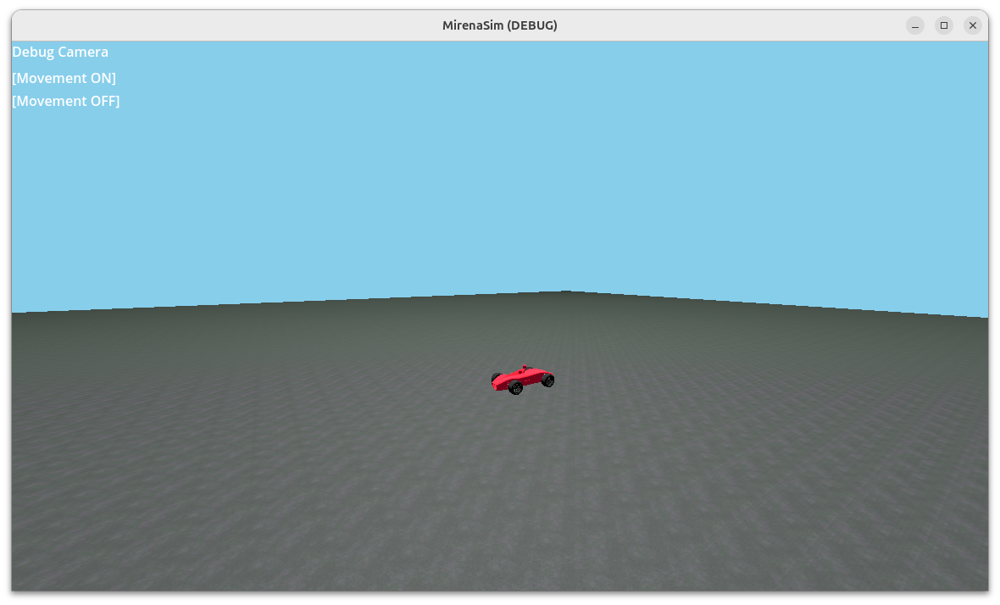
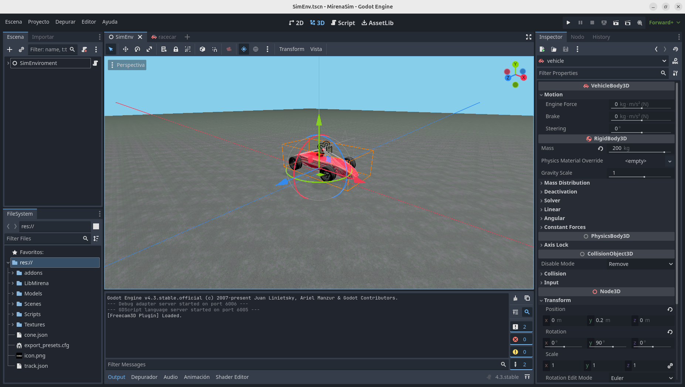

MirenaSim
MirenaSim es el simulador desarrollado In-Haus para desarrollar y testear el sistema autónomo por completo, para ello implementa todos los sensores que uno esperaría tener en un vehículo real.
Instalación
MirenaSim es un paquete más de ROS2, viene incluido por defecto mirena_ws, el entorno de trabajo del proyecto. Puede obtenerse por separado en mirena_sim para su uso y compilación es necesario tener instalado godot en el $PATH (Hay que pushear godot a rosdep), una vez descargado ejecutamos:
git submodule init
git submodule update
colcon --build --packages-select mirena_sim
Current Features
- Sensores
- IMU
- LIDAR
- GPS
- Cámara
- Carga de Pistas en formato MirenaTrack
- Tiempo simulado
- Generación de Datasets para reconocimiento de Conos
Overview
MirenaSim es simplemente una integración del motor de videojuegos godot en el entorno de robótica ROS2, por medio de la interfáz de extensión GDEXTENSION que proporciona godot.
La ventaja de usar Godot radica en la precisión de la simulación comparado a la vida real, comparado con Sistemas como Gazebo, Godot permite una mayor extensibilidad y customización para nuestro caso de uso.
Uso
Para arrancar el simulador desde el entorno de trabajo hay que tener previamente sourceado ros2 y el entorno de trabajo.
source install/setup.sh
ros2 launch mirena_sim mirena_sim_launch.py
Esto debería arrancar una ventana con el entorno de simulación 
Controles
| Tecla | Función |
|---|---|
| TAB | Toggle Freecam |
| m | Carga del mapa |
| l | Cambio entre control manual y ROS |
| p | Dump YOLOV8 para la carpeta configurada |
Customización y modificación
Si sourceas el entorno y ejecutas godot podrás editar el proyecto de Godot localizado en la carpeta MirenaSim del paquete allí puedes cambiar cosas como el posiciónamiento de los sensores o el comportamiento del vehículo. 